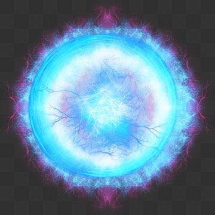

🌞 Born in the Solar Core
Meet Sunny the Photon! Deep in the Sun’s core, nuclear fusion releases immense energy. Photons bounce for thousands of years before emerging from the photosphere.
Once at the surface, Sunny escapes in just 8 minutes, traveling 150 million kilometers to Earth.